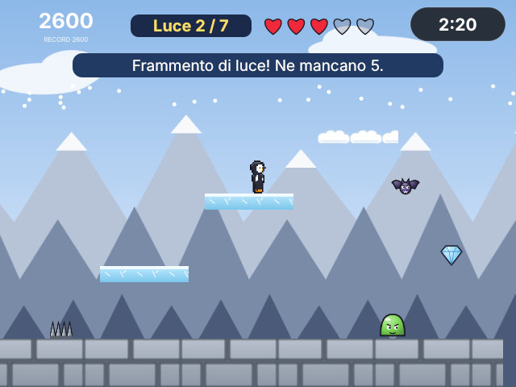

Leo Giochi · Un gioco a piattaforme
Il Faro di Brina
Brina, una pinguina guardiana, deve raccogliere sette frammenti di luce per riaccendere il faro della costa gelata, tra lava, spuntoni, slime e piattaforme che si muovono. La scena è costruita sul palco di Leo Giochi; le regole sono scritte in Leo.
quando Brina.raccoglie Frammento fai frammenti = frammenti + 1 accendi_faro(frammenti)fine- Palco con 48 attori e i loro comportamenti
- Punteggio, vite, tempo, vittoria e sconfitta
- Messaggi a tempo con dopo … millisecondi
Scarica il progettoSi apre in Leo Studio (Suite o Giochi) e si gioca con F5.